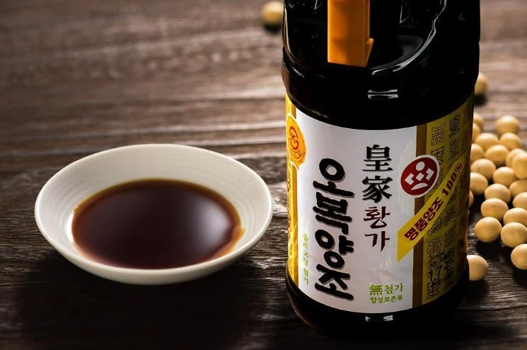
01
韩国酿造酱油
醇厚香气、均衡咸鲜，适用于餐饮、零售与OEM产品开发。
KOREAN BREWED SOY SAUCE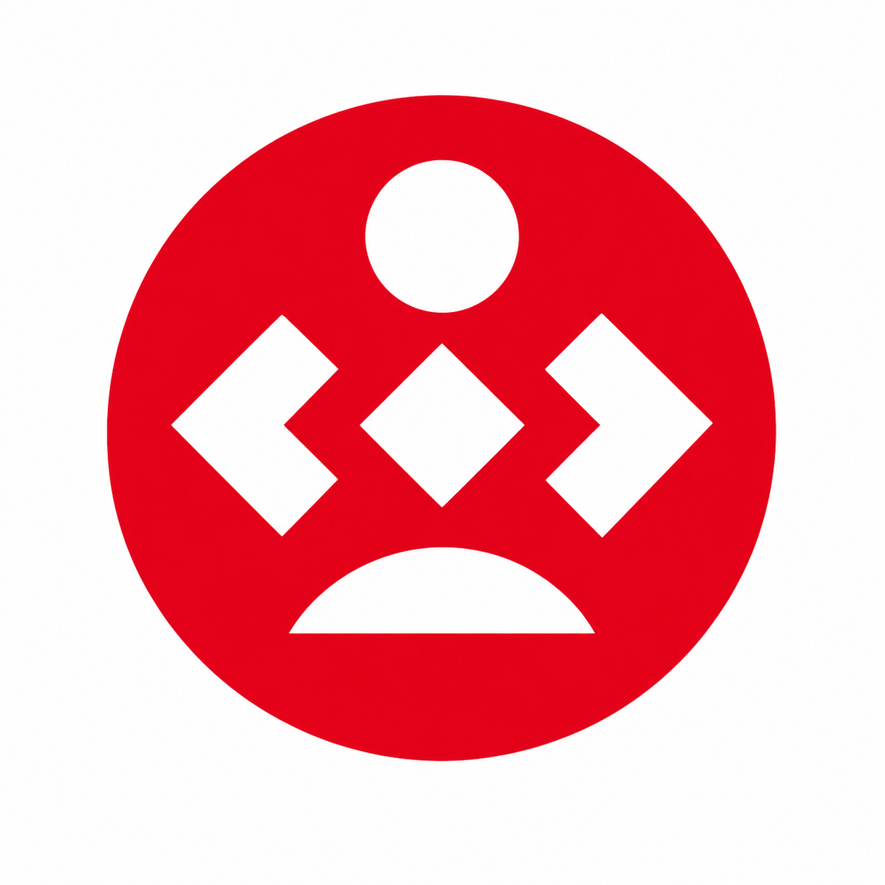
OBOK FOODSINCE 1952ABOUT OBOK
OBOK食品拥有七十余年的酱类制造经验，将传统发酵智慧与现代食品技术相结合。我们专注于酱油、辣椒酱、大酱及多种调味酱的研发与生产，并为海外客户提供OEM与自有品牌合作。
PRODUCT CENTER
从韩国传统酱类到适合全球市场的定制调味产品，OBOK提供灵活的产品开发与生产方案。

醇厚香气、均衡咸鲜，适用于餐饮、零售与OEM产品开发。
KOREAN BREWED SOY SAUCE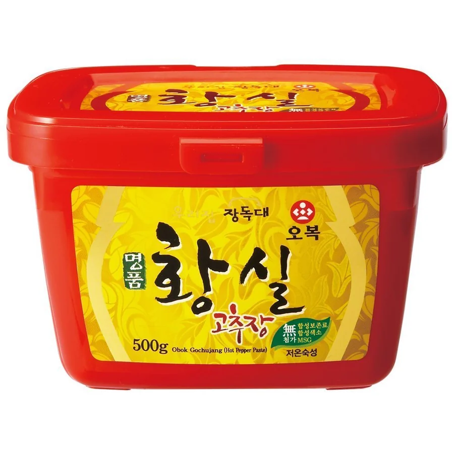
甜、辣、鲜味协调，适合拌饭、烧烤与复合酱料应用。
GOCHUJANG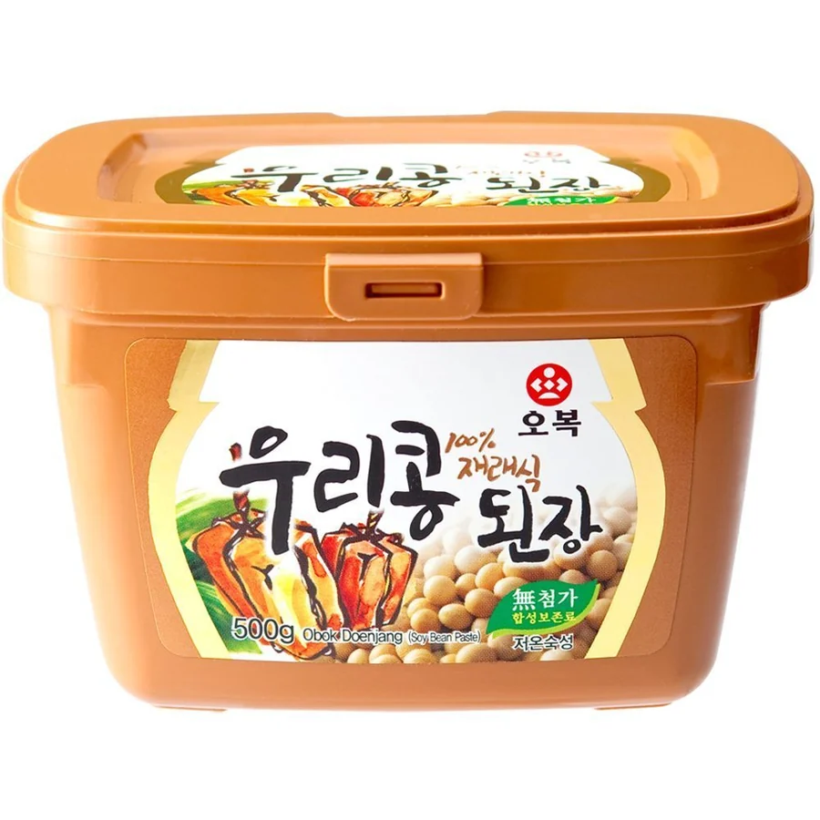
呈现大豆发酵的浓郁风味，适合汤、炖菜及调味产品。
DOENJANG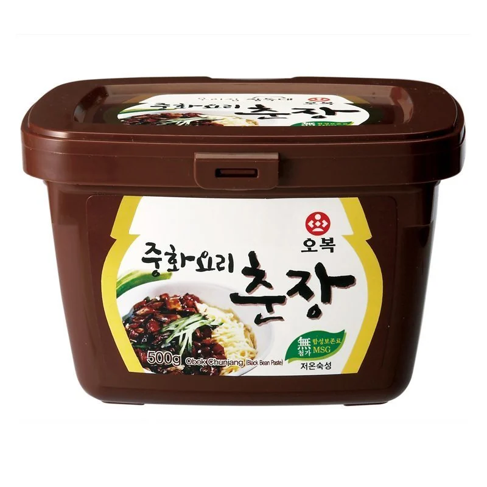
适用于韩式炸酱面及多种餐饮调味，可提供规格定制。
CHUNJANG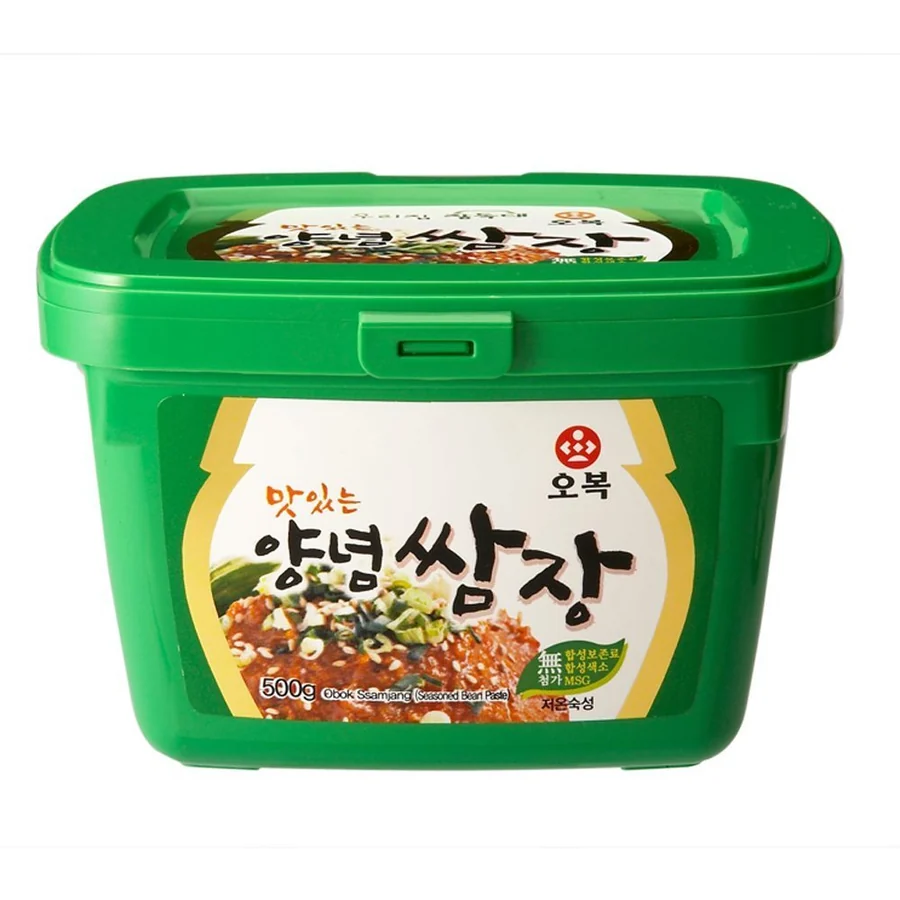
甜、咸、香辣风味协调，适合烤肉、生菜包饭及蘸食。
SSAMJANG
MANUFACTURING STRENGTH
专业储存与发酵设施、标准化生产流程以及经验丰富的团队，保障产品品质与交付稳定性。
FOOD SERVICE & BULK
提供餐饮用、工业用及海外流通用的大容量规格，可根据目标市场协商包装、标签及产品规格。
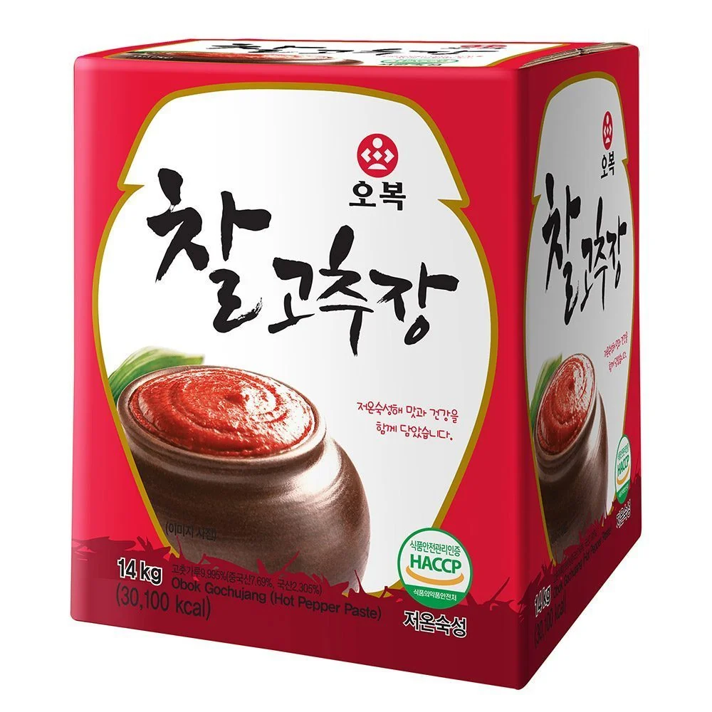
BULK SUPPLY
提供餐饮用、工业用及海外流通用的大容量规格，可根据目标市场协商包装、标签及产品规格。
 14kg桶装辣椒酱
14kg桶装辣椒酱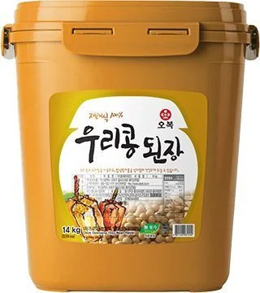
14kg桶装大酱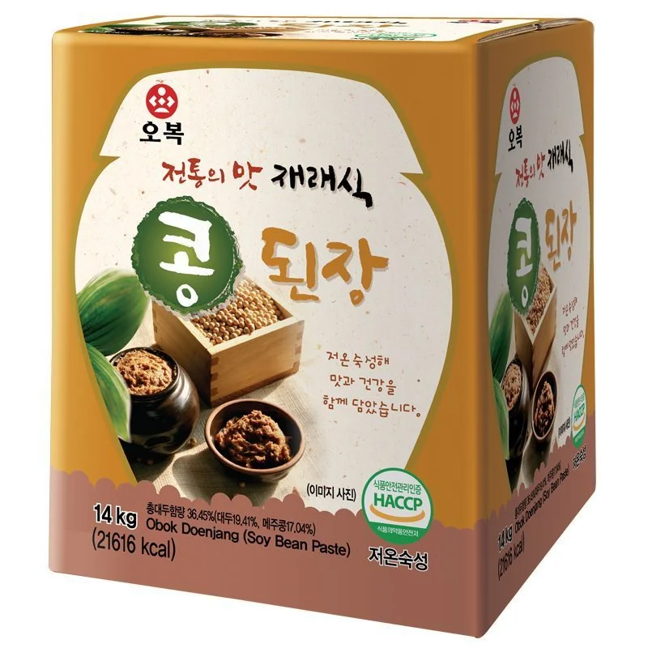
14kg传统大酱PREMIUM GIFT COLLECTION
适用于节日、企业礼赠及海外零售的高端酱油礼盒，可根据市场需求调整产品组合与包装。
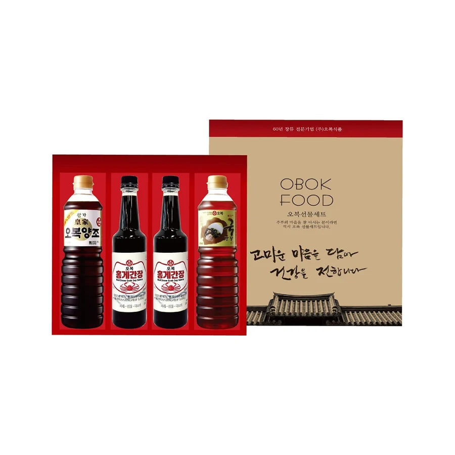

OEM & PRIVATE LABEL
根据目标市场、口味及包装需求，协助客户完成产品策划、样品开发、报价、生产与出口交付。
确认产品、市场、规格与目标价格。
根据需求调整风味与配方。
确认MOQ、包装、交期及贸易条件。
依据标准进行生产与质量管理。
支持出口文件、装运与后续合作。
QUALITY & FACTORY
通过系统化卫生管理与关键工序控制，从原料入库到成品出货，持续维护稳定品质。
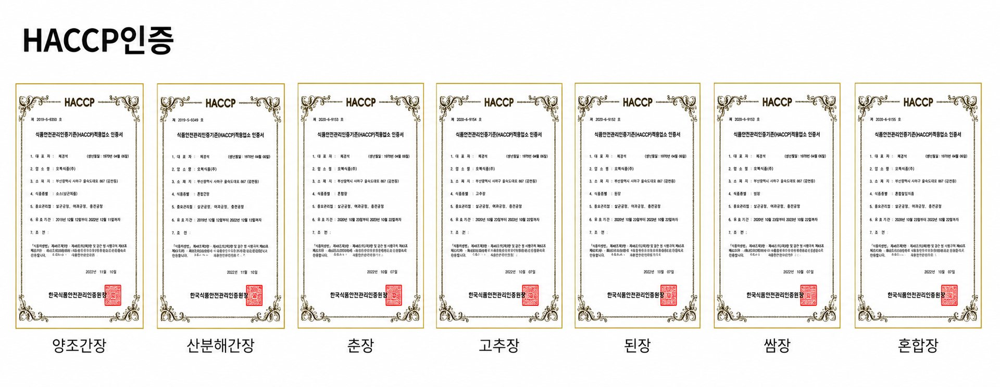
HACCP CERTIFIED PRODUCTS我们的发酵理念
时代虽在改变，我们的坚持始终不变。
我们以耐心、用心以及对自然的尊重，延续韩国传统发酵的原则。
OBOK食品品牌影片
了解OBOK食品背后的价值、生产标准与制造匠心。
CONTACT US
欢迎将产品类型、预计规格、数量和目标市场发送给我们。